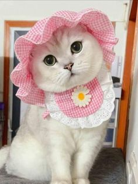

Очарование Котиков: Мягкость, Игривость и Любовь
Котики – настоящие мастера релаксации. Они могут часами дремать в самых неожиданных местах, выбирая самые удобные и солнечные уголки.
Очарование Котиков: Мягкость, Игривость и Любовь

Котики: Мягкие Мастера Уюта и Радости
Котики – это не просто домашние животные, а настоящие компаньоны, способные создать атмосферу уюта и тепла в доме.
Котики — это настоящие исследователи. Их любопытство побуждает их исследовать каждый уголок дома, в поисках новых приключений.
Общение с котиками — это особое искусство. Каждый мурлык, трение о ноги или мягкий взгляд — это способ выразить свою привязанность.
Забота о котиках приносит радость и удовлетворение. Уход за ними включает в себя не только кормление и чистку лотка, но и игры, общение и ветеринарные проверки.
- Поведение котиков
- Охота на игрушки
- Прыжки и беготня
- Уход за котиками
- Корм для котят
- Консервированная пища
- Улучшение настроения
- Компаньоны
- Снижение стресса
- Породы котиков:
- Длинношерстные породы
- Персидские коты
- Мейн-кун
- Короткошерстные породы
- Британская короткошерстная
- Сиамская
- Длинношерстные породы
- Уход за котиками:
- Гигиена
- Чистка лотка
- Уход за шерстью
- Регулярные ветеринарные проверки
- Питание и здоровье
- Правильное кормление
- Физическая активность и игры
- Гигиена